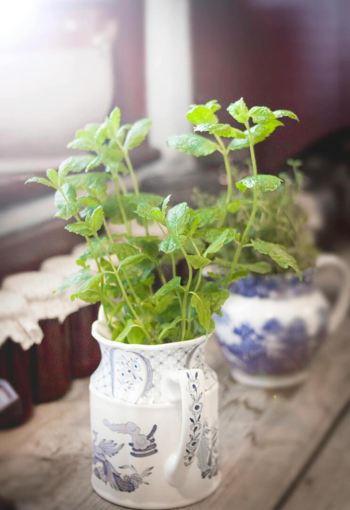
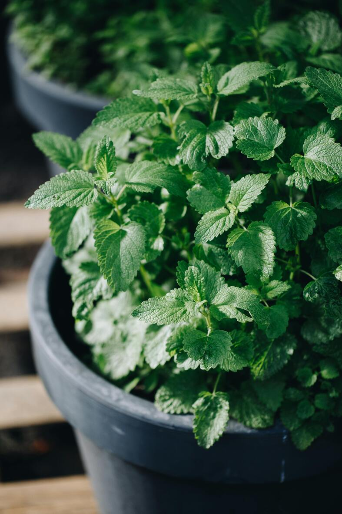
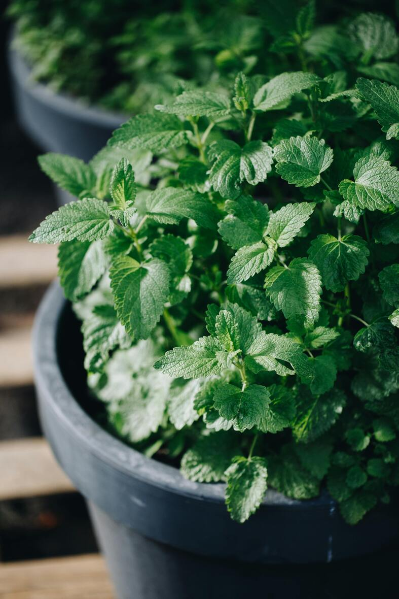
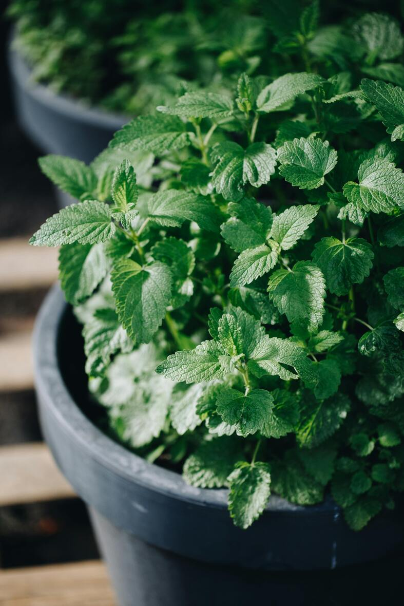

Vitalis Verde
A essência da vitalidade
natural
Bem-vindo ao mundo das plantas medicinais!

 


Você sabia?
Que muitas plantas comuns têm poderes curativos incríveis? Desde tempos antigos, elas tratam doenças e promovem o bem-estar. No nosso site, aprenda a usar essas maravilhas de forma segura e eficaz.
Descubra os poderes das plantas com Vitalis Verde: seu guia no mundo das plantas medicinais.
Como cutivar uma planta?
Para cultivar uma planta com sucesso, é importante seguir alguns passos fundamentais.
Como fazer remédio caseiro?
Para fazer um remédio caseiro eficaz, você pode seguir estas etapas simples.